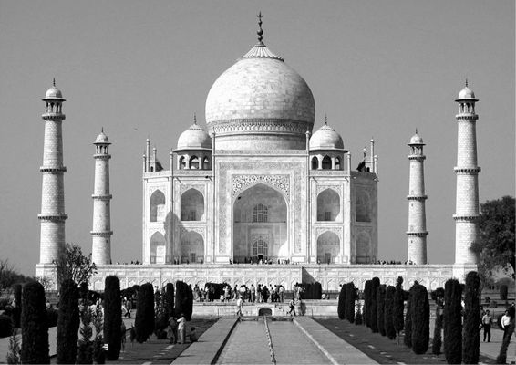

Kapitel 11
Der Traum vom Weltreich
Die alten Römer waren Niederlagen gewöhnt. Wie die meisten Weltreiche der Geschichte konnten sie es sich leisten, eine Schlacht nach der anderen zu verlieren, weil sie am Ende den Krieg doch noch gewannen. Ein Imperium, das schon nach dem ersten Schlag in die Knie geht, ist kein Imperium. Doch selbst den Römern schmeckten die Nachrichten nicht, die Mitte des zweiten Jahrhunderts vor unserer Zeitrechnung aus dem Norden der Iberischen Halbinsel in der Hauptstadt eintrafen. Die keltischen Bewohner eines unbedeutenden Bergdorfs namens Numantia hatten es gewagt, das römische Joch abzuschütteln. Das Römische Reich war damals unumstrittener Herrscher des gesamten Mittelmeerraums, es hatte Makedonien und die Seleukidenreiche besiegt, die stolzen Stadtstaaten Griechenlands unterworfen und Karthago in Schutt und Asche gelegt. Die Numantier hatten nur ihre wilde Freiheitsliebe und die unwirtliche Gegend auf ihrer Seite. Trotzdem schlugen sie eine Legion nach der anderen zurück.
Irgendwann, genauer gesagt im Jahr 134 v. u. Z., riss den Römern schließlich der Geduldsfaden. Der Senat beauftragte Scipio Aemilianus, den bedeutendsten General des Imperiums und Zerstörer von Karthago, sich um die Numantier zu kümmern. Dazu stellten sie ihm eine riesige Armee mit 30000 Soldaten zur Verfügung. Scipio hatte Respekt vor dem Kampfgeist und dem kriegerischen Geschick der Numantier und verspürte wenig Lust, seine Soldaten in unnötigen Schlachten zu opfern. Also errichtete er einen Festungsgürtel um Numantia, schnitt den Ort von der Außenwelt ab und wartete, dass der Hunger ihm die Arbeit abnahm. Nach mehr als einem Jahr gingen den Eingekesselten die Lebensmittel aus. Als die Numantier erkannten, dass jede Hoffnung verloren war, brannten sie ihren Ort nieder. Der Überlieferung zufolge begingen die meisten von ihnen Selbstmord, um nicht den Römern in die Hände zu fallen und in die Sklaverei verkauft zu werden.
Später wurde Numantia ein Symbol für die spanische Freiheitsliebe. Miguel de Cervantes, Autor des Don Quijote, schrieb eine Tragödie mit dem Titel Numantia, die mit der Zerstörung des Ortes und einer Vision von der künftigen Größe Spaniens endet. Dichter und Maler feierten den Widerstand der Numantier in Versen und Farben. Im Jahr 1882 wurden die Überreste zum »Nationaldenkmal« erklärt und zum Pilgerort für spanische Patrioten. Die beliebteste spanische Comicserie der 1950er und 1960er Jahren schilderte die Abenteuer von El Jabato, einem fiktiven iberischen Helden, der gegen die bösen Römer kämpfte. Die alten Numantier verkörperten Heldentum und Vaterlandsliebe und wurden als Vorbild für ihre Nachfahren, die modernen Spanier, bejubelt.
Doch die spanischen Patrioten feierten die Numantier auf Spanisch, einer romanischen Sprache und Abkömmling der lateinischen Sprache General Scipios – die Numantier sprachen einen längst vergessenen kelto-iberischen Dialekt. Cervantes schrieb seine Tragödie in lateinischer Schrift, und sein Theaterstück folgt griechischen und römischen Vorbildern – die Numantier kannten keine Theater. Die Spanier, die den Heldenmut der Numantier bewundern, sind überwiegend fromme Angehörige der römisch-katholischen Kirche, deren Oberhaupt bis heute in Rom sitzt und deren Gott sich bis heute gern in lateinischer Sprache anbeten lässt. Das moderne spanische Recht basiert auf dem antiken Römischen Recht, die spanische Politik steht auf römischen Schultern und die spanische Küche und Architektur schuldet den Römern mehr als den Kelten. Von Numantia ist nichts übrig als ein paar Ruinen. Selbst seine Geschichte kennen wir nur, weil römische Historiker sie niedergeschrieben haben. Sie war ganz nach dem Geschmack des römischen Publikums, das Geschichten von freiheitsliebenden Barbaren liebte. Die Römer ließen nichts von den Numantiern übrig, die Sieger übernahmen sogar noch die Erinnerung an die Besiegten.
Das ist keine nette Geschichte. Wir hören lieber Erzählungen vom tapferen kleinen David, der sich dem bösen Goliath erfolgreich widersetzt, und wenn David schon nicht auf dem Schlachtfeld siegt, dann zumindest auf dem Gebiet der Kultur. Aber die Geschichte ist nicht gerecht. Die meisten Kulturen der Vergangenheit wurden früher oder später von dem einen oder anderen Imperium geschluckt und verschwanden auf Nimmerwiedersehen. Auch Imperien gehen irgendwann unter, doch sie hinterlassen ein reiches und langlebiges Erbe. Die meisten Völker des 21. Jahrhunderts sind Nachfahren des einen oder anderen Weltreichs.
Was ist ein Imperium?
Ein Imperium ist eine politische Ordnung mit zwei entscheidenden Eigenschaften. Um als Imperium zu gelten, muss es über eine ausreichende Zahl von verschiedenen Völkern herrschen, von denen jedes seine eigene kulturelle Identität und sein eigenes Territorium hat. Wie viele Völker müssen es genau sein? Zwei oder drei reichen jedenfalls noch nicht aus. Zwanzig oder dreißig sind genug. Die Grenze zum Imperium liegt irgendwo dazwischen.
Zweitens zeichnen sich Imperien durch flexible Grenzen und einen potenziell grenzenlosen Appetit aus. Sie können sich immer mehr Völker und Gebiete einverleiben, ohne ihre Struktur oder Identität zu verlieren. Das heutige Großbritannien hat klar definierte Grenzen, die es nicht überschreiten kann, ohne dass der Staat seine Struktur oder Identität völlig verändern würde. Aber vor einem Jahrhundert hätte fast jeder Ort auf der Erde Teil des Britischen Weltreichs werden können.
Kulturelle Vielfalt und ein flexibles Herrschaftsgebiet verleihen Imperien nicht nur ihren einmaligen Charakter, sondern auch ihren zentralen Platz in der Geschichte. Dank dieser beiden Eigenschaften gelang es ihnen, eine große Vielfalt von Ethnien und Regionen unter einen Hut zu bringen und dabei immer größere Teile der Menschheit und des Planeten zu vereinen.
Wir sollten noch einmal unterstreichen, dass sich ein Imperium ausschließlich über seine kulturelle Vielfalt und seine flexiblen Grenzen definiert, nicht über seine Ursprünge, seine Staatsform, seine Größe oder die Zahl seiner Einwohner. Ein Imperium muss zum Beispiel nicht das Ergebnis von Eroberungszügen sein: Das Reich der Athener begann als freiwilliger Zusammenschluss und das Reich der Habsburger wurde durch eine geschickte Heiratspolitik geschmiedet. Ein Imperium muss auch nicht unbedingt von einem Alleinherrscher geführt werden: Das Britische Weltreich, das größte Imperium der Geschichte, wurde von einem halbwegs demokratisch gewählten Parlament regiert. Auch die modernen Reiche der Niederländer, Franzosen, Belgier und Vereinigten Staaten waren mehr oder weniger demokratisch, genau wie die antiken Imperien von Nowgorod, Rom, Karthago und Athen.
Auch die Größe spielt keine Rolle. Imperien können winzig sein. Auf seinem Höhepunkt nahm das Reich von Athen nicht einmal den Raum des heutigen Griechenlands ein und hatte weniger Einwohner. Das Reich der Azteken war nicht einmal halb so groß wie das heutige Mexiko. Doch anders als die modernen Staaten, die ihnen nachfolgten, waren beides Imperien, da sie im Laufe der Zeit Dutzende oder gar Hunderte verschiedene Staaten und Ethnien unter ihre Herrschaft brachten. Die Athener regierten über mehr als hundert einst unabhängige Stadtstaaten, und wenn man den Steuerbüchern der Azteken glauben darf, dann herrschten sie mit ihrem Reich über 371 verschiedene Stämme und Völker.63
Wie war es möglich, dieses menschliche Potpourri in das Territorium eines bescheidenen modernen Staates zu zwängen? Es war deshalb möglich, weil es in der Vergangenheit deutlich mehr Völker gab, die weniger Angehörige und kleinere Territorien hatten als heutige Völker. In der Region zwischen der Mittelmeerküste und dem Jordan, die heute mit Ach und Krach die Bedürfnisse zweier Nationen befriedigt, fanden zu biblischen Zeiten spielend Dutzende Völker, Stämme, kleine Königreiche und Stadtstaaten Platz.
Wenn sich die menschliche Vielfalt derart drastisch verringert hat, dann liegt das auch an den Weltreichen. Mit ihrer imperialen Dampfwalze ebneten sie die Unterschiede zwischen den Völkern ein und schufen so neue und immer größere Gruppen.
Reich des Bösen?
Weltreiche genießen heutzutage keinen allzu guten Ruf. Im Lexikon der politischen Schimpfwörter kommt »Imperialist« gleich nach »Faschist«. Sie werden vor allem aus zwei Gründen kritisiert:
1. Imperien funktionieren nicht. Auf lange Sicht ist es unmöglich, eine große Zahl unterworfener Völker zu beherrschen.
2. Und selbst wenn es möglich wäre, dann ist es wenig ratsam, da Imperien sowohl die Eroberer als auch die Eroberten korrumpieren. Jedes Volk hat ein Recht auf freie Selbstbestimmung und seinen eigenen Staat.
Aus historischer Sicht ist die erste Aussage unsinnig und die zweite mindestens fragwürdig.
In Wirklichkeit war das Imperium während der vergangenen zweieinhalb Jahrtausende die vorherrschende Staatsform. Die allermeisten Menschen lebten in irgendeinem Weltreich. Es handelt sich auch um eine ausgesprochen stabile Staatsform. Den meisten Imperien fiel es erschreckend leicht, sämtliche Aufstände niederzuschlagen; wenn sie zu Fall kamen, dann meist nur durch eine Invasion von außen oder eine Spaltung der herrschenden Elite. Umgekehrt befreiten sich die allermeisten unterworfenen Völker nie aus der Herrschaft durch ihre Unterdrücker. Sie blieben jahrhundertelang unterjocht und wurden allmählich vom Imperium vereinnahmt, bis ihre eigenständige Kultur verschwand.
Als beispielsweise das Weströmische Reich um das Jahr 476 unter dem Ansturm der germanischen Stämme zusammenbrach, kehrten die Numantier, Arverner, Helvetier, Samniter, Lusitanier, Umbrier, Etrusker und Hunderte andere Völker nicht wieder aus den Ruinen des Reichs zurück wie Jonas aus dem Bauch des Wals. Die Nachfahren dieser Völker hatten die Sprachen und Götter ihrer Vorfahren längst vergessen und sprachen, dachten und beteten wie Römer.
Oft bedeutete der Untergang eines Imperiums keineswegs die Freiheit für die unterjochten Völker. Stattdessen füllte ein neues Reich das Machtvakuum. Das wird nirgends so deutlich wie im Nahen Osten. Die heutige politische Situation in der Region – ein Kräftegleichgewicht zwischen zahlreichen unabhängigen Staaten mit mehr oder weniger festen Grenzen – ist in der jüngeren Geschichte völlig beispiellos. Zuletzt erlebte der Nahe Osten eine ähnliche Situation im achten Jahrhundert vor unserer Zeitrechnung – also vor fast 3000 Jahren! Vom Aufstieg des Neuassyrischen Reichs im achten Jahrhundert vor unserer Zeitrechnung bis zum Untergang der Britischen und Französischen Kolonialreiche Mitte des 20. Jahrhunderts wurde der Nahe Osten von einem Imperium zum anderen weitergereicht wie ein Staffelstab. Und als die Briten und Franzosen den Stab schließlich fallen ließen, waren die Aramäer, Amoniter, Phönizier, Philister, Moabiter, Edomiter und all die anderen Völker, die einst von den Assyrern unterworfen worden waren, längst verschwunden.
Natürlich nehmen die heutigen Juden, Armenier und Georgier mit gewissem Recht für sich in Anspruch, die Nachfahren von früheren Völkern des Nahen Ostens zu sein. Doch sie sind die Ausnahme, und selbst ihre Ansprüche sind weit überzogen. Die politische, wirtschaftliche und gesellschaftliche Ordnung der heutigen Juden verdankt sich viel eher den Weltreichen, unter denen sie in den letzten beiden Jahrtausenden lebten, als dem antiken Königreich Juda. Wenn König David in einer ultraorthodoxen Synagoge im heutigen Jerusalem vorbeischauen würde, dann wäre er sicher verwundert über die Menschen in osteuropäischer Kleidung, die einen deutschen Dialekt (Jiddisch) sprechen und endlose Auseinandersetzungen um die Bedeutung eines babylonischen Texts (des Talmuds) führen. Im antiken Juda gab es weder Synagogen, noch den Talmud und noch nicht einmal Torahrollen.
*
Der Aufbau und Erhalt eines Imperiums ging meist mit Blutvergießen und Unterdrückung einher. Krieg, Versklavung, Verschleppung und Völkermord zählen seit jeher zum Handwerkszeug der Weltreiche. Als die Römer im Jahr 83 in das heutige Schottland vordrangen und auf heftigen Widerstand der Kaledonier stießen, verwüsteten sie das Land kurzerhand. In seiner Antwort auf ein Friedensangebot bezeichnete der kaledonische Häuptling Calgacus die Römer als »Schläger der Welt« und schimpfte: »Um zu plündern, zu morden und zu rauben, geben sie sich den verlogenen Namen eines Imperiums. Sie hinterlassen eine Wüste und nennen sie Frieden.«64
Was nicht heißen soll, dass Weltreiche nur Schaden anrichten. Wer alle Imperien in Bausch und Bogen verdammt und ihr Erbe verteufeln wollte, müsste den Großteil der menschlichen Kultur verdammen und verteufeln. Mit der Beute aus den Eroberungen finanzierten die Eliten der Imperien nicht nur Armeen und Festungen, sondern auch Philosophie, Kunst und Recht. Ein erheblicher Teil der großen Kunstwerke der Menschheit verdankt seine Existenz der Ausbeutung unterworfener Völker. Die Früchte des römischen Imperialismus nährten die Gedanken von Cicero, Seneca und Augustinus von Hippo, die Erträge des Mogulreichs flossen in den Bau des Taj Mahal, und die Steuern aus dem Reich der Habsburger bezahlten die Gehälter von Mozart und Hayden. Dass Calgacus’ Wutrede überliefert wurde, haben wir übrigens dem römischen Historiker Tacitus zu verdanken. Die meisten Wissenschaftler sind sich heute einig, dass es den kaledonischen Häuptling Calgacus gar nicht gab, sondern dass Tacitus ihn erfand, um die römische Oberschicht zu kritisieren.
Selbst wenn wir die »Hochkultur« beiseitelassen und uns den Alltag der normalen Menschen ansehen, finden wir in den meisten modernen Kulturen Überreste des imperialen Erbes. Heute sprechen, denken und träumen wir in Sprachen, die unseren Vorfahren mit dem Schwert aufgezwungen wurden. Die meisten Ostasiaten sprechen die Sprache des Han-Reichs. Die meisten Bewohner des amerikanischen Doppelkontinents verständigen sich in einer von vier Kolonialsprachen: Spanisch, Portugiesisch, Französisch oder Englisch. Die modernen Ägypter sprechen Arabisch, halten sich für Araber und identifizieren sich mit dem Arabischen Reich, das Ägypten im 7. Jahrhundert eroberte und die wiederholten Aufstände gegen seine Herrschaft mit eiserner Faust niederschlug. Rund 10 Millionen Zulus in Südafrika erinnern sich an das Goldene Zeitalter der Zulus im 19. Jahrhundert, auch wenn sie mehrheitlich von Stämmen abstammen, die damals erbitterten Widerstand gegen das Zulu-Reich leisteten und in blutigen Feldzügen unterworfen wurden.
Wir wollen nur euer Bestes
Das erste Imperium, von dem wir definitiv Kenntnis haben, war das Akkadische Großreich von König Sargon (ca. 2250 v. u. Z.). Sargon von Akkad begann seine Laufbahn als König von Kisch, einem kleinen Stadtstaat in Mesopotamien. Innerhalb weniger Jahrzehnte gelang es ihm, nicht nur die übrigen Stadtstaaten der Region zu unterwerfen, sondern sein Herrschaftsgebiet weit über das Zweistromland hinaus auszuweiten. Sargon prahlte, er habe »die ganze Welt« erobert. In Wirklichkeit reichte Akkad vom Persischen Golf bis zum Mittelmeer und umfasste die heutigen Länder Irak und Syrien sowie Teile des modernen Iran und der Türkei. Sein Reich fiel kurz nach seinem Tod wieder in sich zusammen, doch Sargon hinterließ einen Königsmantel, der nie lange ohne Besitzer blieb. Während der nächsten 1700 Jahre traten die Könige der Assyrer, Babylonier und Hethiter in Sargons Fußstapfen und behaupteten, auch sie hätten »die ganze Welt« erobert.
Erst mit Kyros dem Großen von Persien (ca. 550 v. u. Z.) begegnen wir einer neuen Spielart des Imperiums. Die Könige von Assyrien blieben immer Könige von Assyrien. Selbst wenn sie behaupteten, dass sie über die ganze Welt herrschten, taten sie dies ganz unverhohlen im Interesse Assyriens. Kyros bezeichnete sich dagegen nicht nur als Herrscher der Welt, sondern er behauptete, er regiere zum Nutzen aller Völker. »Wir unterwerfen euch, weil wir das Beste für euch wollen«, erklärte er. Das berühmteste Beispiel für die neue Politik von Kyros war seine Entscheidung, den Juden die Rückkehr aus der babylonischen Gefangenschaft in ihre Heimat und den Wiederaufbau des Tempels von Jerusalem zu gestatten. Kyros bot ihnen sogar finanzielle Unterstützung an. Er betrachtete sich nicht als persischer König, der über die Juden herrschte, sondern er verstand sich als König der Juden und übernahm die Verantwortung für ihr Wohlergehen.
Diese Anmaßung, die ganze Welt zum Wohl aller Menschen regieren zu wollen, war so erstaunlich wie unnatürlich. Die Evolution hat den Homo sapiens wie alle anderen Herdentiere zu einem fremdenfeindlichen Wesen gemacht. Jede Gruppe neigt dazu, den Unterschied zwischen »uns« und »den anderen« zu betonen, fremde Einflüsse herunterzuspielen und die Verantwortung für andere abzulehnen. Ethnische Gruppen haben die Tendenz, andere auszuschließen und sich nach außen abzuschotten. Sie wollen andere aus ihrem Fleckchen Heimat fernhalten und interessieren sich wenig für Menschen, die anderswo leben. Die anderen werden oft nicht einmal als Menschen anerkannt. In der Sprache der Dinka im Südsudan bedeutet »Dinka« einfach »Menschen«. Wer kein Dinka ist, ist auch kein Mensch. Die größten Feinde der Dinka sind die Nuer – und was bedeutet »Nuer«? »Die echten Menschen«. Tausende Kilometer von der Wüste des Sudan entfernt, in den eisigen Weiten Alaskas und Sibiriens, leben die Yupiks. Und was meinen Sie wohl, was »Yupik« bedeutet?65
Mit Kyros begann jedoch der Gedanke, Weltreiche müssten dieses Provinzdenken überwinden und sämtliche Einwohner einschließen. Imperien betonten zwar oft die ethnischen Unterschiede zwischen Herrschenden und Beherrschten, doch sie erkannten die grundlegende Einheit der ganzen Welt, die Existenz von universellen Prinzipien, die überall und für alle galten, und die Verantwortung aller für alle. Sie betrachteten die Menschheit als große Familie: Die Privilegien der Eltern gehen Hand in Hand mit ihrer Verantwortung für das Wohl der Kinder.
Kyros reichte diese neue Auffassung des Imperiums an Alexander den Großen weiter, von dem es auf die indisch-hellenistischen Könige, die römischen Kaiser, die muslimischen Kalifen, die indischen Dynasten und schließlich die sowjetischen Generalsekretäre und die Präsidenten der Vereinigten Staaten überging. Diese Vorstellung des Herrschers als Vater aller Untertanen war die perfekte Rechtfertigung für die Existenz von Weltreichen: Sie sprach unterworfenen Völkern das Recht auf Rebellion genauso ab wie unabhängigen Völkern das Recht auf Widerstand gegen ihre Einverleibung.
Unabhängig vom persischen Vorbild wurden auch anderswo auf der Welt ähnliche Ideologien entwickelt, vor allem in Mittelamerika, den Anden und China. Nach der traditionellen chinesischen Theorie geht alle legitime Macht vom Himmel aus. Der Himmel wählt die würdigste Person oder Familie aus und verleiht ihm ein Mandat. Diese Person oder Familie herrscht dann über alle Menschen unter dem Himmel und zu ihrem Nutzen. Die legitime Autorität ist damit definitionsgemäß weltumspannend. Ohne den himmlischen Auftrag hat ein Herrscher nicht einmal das Recht, über ein einziges Dorf zu herrschen. Mit dem Mandat hat er die Pflicht, der ganzen Welt Gerechtigkeit und Frieden zu bringen. Der Himmel entsendet nie mehr als einen Herrscher gleichzeitig, weshalb es keine Rechtfertigung für die Existenz mehrerer unabhängiger Staaten geben kann.
Qín Shǐhuángdì, der erste erhabene Gottkaiser des geeinten China, prahlte: »In den sechs Richtungen des Universums gehört alles dem Kaiser … Wohin auch immer ein Mensch seinen Fuß gesetzt hat, gibt es niemanden, der nicht Untertan des Kaisers wurde … Seine Güte schließt selbst Ochsen und Pferde ein. Es gibt niemanden, dem sie nicht zugute kommt. Jeder Mensch ist sicher unter seinem Dach.«66 Im kollektiven Gedächtnis und in der politischen Theorie der Chinesen gelten Großreiche seither als Goldene Zeitalter von Recht und Ordnung. Zeiten der Kleinstaaterei gelten dagegen als finstere Phasen von Unrecht und Chaos. Diese Wahrnehmung hat weitreichenden Einfluss auf die chinesische Geschichte und ließ eine Philosophie aufkommen, die sich erheblich von der europäischen unterscheidet. Jedes Mal, wenn ein Reich unterging, gaben sich die Herrschenden unter dem Einfluss dieser Theorie nicht mit kleinen, unabhängigen Herrschaftsgebieten zufrieden, sondern strebten eine neuerliche Vereinigung an. Früher oder später waren alle diese Versuche von Erfolg gekrönt.
Alle unter einem Dach
Großreiche haben eine entscheidende Rolle bei der Verschmelzung vieler kleiner zu wenigen großen Kulturen gespielt. Gedanken, Menschen, Waren und Technologien werden in einem Imperium schneller weitergegeben als in einer politisch zersplitterten Region. Oft waren es die Imperien selbst, die gezielt Gedanken, Institutionen und Verhaltensweisen verbreiteten.
Erstens erleichterten sie sich damit selbst das Leben: Es ist schwierig, ein großes Reich zu regieren, wenn jedes Tal seine eigenen Gesetze, Schriftsysteme, Sprachen und Währungen hat. Die Standardisierung kam den Herrschenden also sehr entgegen.
Und zweitens schufen Imperien eine einheitliche Kultur, um sich selbst zu legitimieren. Spätestens seit den Tagen von Kyros und Qín Shǐhuángdì rechtfertigten Imperien jede Handlung vom Straßenbau bis zum Völkermord mit der Behauptung, sie brächten eine überlegene Kultur und nützten damit den Eroberten mehr als den Eroberern selbst.
So zweifelhaft manche Segnungen des Reichs auch waren, glaubten die Herrschenden natürlich nur zu gern, dass sie für das Wohl aller ihrer Untertanen sorgten. Die Elite des kaiserlichen China betrachtete Nachbarn und fremde Untertanen als arme Barbaren, denen das Imperium die Wunder der Zivilisation bescherte. Der Kaiser erhielt den himmlischen Auftrag nicht etwa, um die Welt auszubeuten, sondern um die Menschheit zu erziehen. Auch die Römer rechtfertigten ihre Herrschaft mit der Behauptung, sie brächten den Barbaren Frieden, Gerechtigkeit und das Licht der Kultur: Die wilden Germanen befriedeten sie mit dem römischen Recht und den ungewaschenen Galliern schenkten sie öffentliche Badehäuser, römische Philosophie und Theater. Das indische Maurya-Reich des dritten Jahrhunderts vor unserer Zeitrechnung sah es als seine Aufgabe an, der nicht erleuchteten Menschheit die Lehre Buddhas zu bringen. Die muslimischen Kalifen erhielten den Auftrag Allahs, die Lehre des Propheten Mohammed zu verbreiten, wenn möglich friedlich, wenn nötig mit dem Schwert. Die spanischen und portugiesischen Weltreiche sahen sich als Botschafter des Christentums, die in der Neuen Welt nicht etwa Gold suchten, sondern Seelen retteten. Für die modernen Briten war das Empire ein Instrument zur Verbreitung der Religion des Liberalismus und des Freihandels. Die Sowjets behaupteten, ihr Reich beschleunige den unvermeidlichen Übergang vom Kapitalismus zur Diktatur des Proletariats. Und viele Amerikaner sind überzeugt, ihr Imperium habe die moralische Pflicht, die Länder der Dritten Welt mit Demokratie und Menschenrechten zu beglücken, auch wenn sie dazu Drohnen und Bomber schicken.
Die Kultur, die das Imperium verbreitete, war nicht etwa die Erfindung der herrschenden Eliten. Da das Imperium seinem Selbstverständnis nach universell und allumfassend war, konnten sich die Eliten ihre Gedanken, Normen und Traditionen überall zusammensuchen und mussten sich nicht fanatisch an eine einzige engstirnige Überlieferung klammern. Imperien bringen in der Regel Mischkulturen hervor, die dem Einfluss der eroberten Völker viel zu verdanken haben. Die Kultur des Römischen Reichs war beispielsweise fast so griechisch wie römisch. Die Kultur des Abbasidenreichs speiste sich aus persischen, griechischen und arabischen Quellen. Und das Mongolenreich war eine Kopie des chinesischen Kaiserreichs.
Diese Mischung erleichterte den eroberten Völkern die Anpassung keineswegs. Die Kultur des Imperiums bediente sich zwar bei verschiedenen besiegten Völkern, doch die daraus entstehende hybride Kultur war der überwiegenden Mehrheit der Untertanen trotzdem fremd. Der Prozess der Assimilation war oft schmerzhaft. Es ist immer schwer, vertraute und lieb gewonnene eigene Traditionen aufzugeben und eine neue Kultur zu verstehen und zu übernehmen. Schlimmer noch, selbst wenn es einem unterworfenen Volk gelang, sich die Kultur des Imperiums anzueignen, konnten noch Jahrzehnte oder Jahrhunderte vergehen, ehe es von der herrschenden Elite als »einer von uns« anerkannt wurden. Die Generationen zwischen der Eroberung und der Anerkennung standen vor verschlossenen Türen. Sie hatten ihre eigene Kultur verloren, aber gleichberechtigte Partner der neuen Kultur waren sie damit noch lange nicht. Im Gegenteil, sie wurden weiter als »Barbaren« behandelt.
Stellen Sie sich einen Kelten aus einer angesehenen Familie vor, der einige Generationen nach dem Fall von Numantia im Norden der Iberischen Halbinsel lebt. Mit seinen Eltern spricht er einen keltischen Dialekt, mit seinen Geschäftspartnern und den Behörden kommuniziert er in tadellosem Latein. Seiner Frau schenkt er schnörkeligen keltischen Goldschmuck, obwohl er sich ein bisschen dafür schämt und es lieber sähe, wenn sie den schlichten Schmuck der Frau des römischen Gouverneurs tragen würde. Er selbst trägt die römische Tunika. Da er sich im römischen Handelsrecht auskennt, hat er als Viehhändler ein kleines Vermögen verdient und sich eine römische Villa gebaut. Aber obwohl er römische Literatur liest und Teile von Vergils Georgica auswendig gelernt hat, bleibt er in den Augen der Römer immer ein Barbar. Frustriert muss er einsehen, dass er nie einen Posten in der Verwaltung bekommen und im Theater immer auf den schlechten Plätzen sitzen wird.
Genau diese Lektionen mussten viele gebildete Inder Ende des 19. Jahrhunderts von ihren britischen Herren lernen. Einer davon sollte später berühmt werden. Als ehrgeiziger junger Mann vertiefte er sich in die Feinheiten der englischen Sprache, nahm Tanzstunden und lernte den Umgang mit Messer und Gabel. Mit besten Manieren ausgestattet, studierte er Jura am University College in London und schloss sein Studium als Rechtsanwalt ab. Angetan mit Anzug und Krawatte wurde dieser junge Mann in der britischen Kolonie Südafrika aus dem Zug geworfen, weil er darauf bestand, in der ersten Klasse zu reisen, statt sich mit der für »Farbige« bestimmten dritten Klasse zufriedenzugeben. Der Mann hieß Mohandas Karamchand Gandhi, und er sollte diese Lektion nie vergessen.
In einigen Fällen fiel die Mauer zwischen den assimilierten Neuankömmlingen und der alten Elite. Die Eroberten betrachteten das Imperium nicht mehr als fremde Besatzungsmacht und die Eroberer behandelten die Untertanen als Gleichberechtigte. Aus »den anderen« wurde allmählich »wir«. So erhielten die von Rom eroberten Völker irgendwann das Bürgerrecht, und die Generäle, Senatoren und sogar Kaiser konnten aus den unterschiedlichsten ethnischen Gruppen rekrutiert werden. Im Jahr 48 holte Kaiser Claudius einige gallische Adelige in den Senat, die »durch Gewohnheiten, Kultur und Heirat eins mit uns geworden sind«, wie er in einer Rede sagte. Einige Senatoren protestierten dagegen, dass die einstigen Feinde des Reichs nun an den Schalthebeln der Macht sitzen sollten. Doch Claudius erinnerte sie an eine unangenehme Wahrheit: Die meisten der Senatorenfamilien gingen auf italienische Stämme zurück, die einst gegen Rom gekämpft und später die römische Staatsbürgerschaft erhalten hatten. Die Familie des Kaisers selbst hatte sabinische Vorfahren.67
Während des zweiten Jahrhunderts wurde Rom von einer Reihe von Kaisern regiert, die von der iberischen Halbinsel stammten und in deren Adern vermutlich ein paar Tropfen keltischen Blutes flossen. Das Zeitalter der iberischen Kaiser – Trajan, Hadrian, Antoninus Pius und Mark Aurel – wird oft als das Goldene Zeitalter des Römischen Reichs bezeichnet. Danach brachen alle ethnischen Dämme. Kaiser Septimius Severus (193–211) stammte aus einer punischen Familie aus Libyen. Algebalus (218–222) war Syrer. Kaiser Philip (244–249) wurde weithin »Philip der Araber« genannt. Die neuen Bürger übernahmen die Kultur des Imperiums mit solchem Eifer, dass sie auch noch Jahrhunderte und Jahrtausende nach dessen Untergang seine Sprache sprachen, an seinen Gott glaubten und seine Gesetze befolgten.
Der Prozess wiederholte sich im Arabischen Weltreich. Zur Zeit der Eroberung Mitte des 7. Jahrhunderts trennten die Herrscher noch streng zwischen der arabisch-muslimischen Elite und den unterworfenen Ägyptern, Syrern, Iranern und Berbern, die weder Araber noch Muslime waren. Viele der Untertanen traten schließlich zum Islam über, lernten Arabisch und übernahmen die hybride Kultur des Imperiums. Die alte arabische Elite betrachtete diese Emporkömmlinge mit Misstrauen und fürchtete um ihren Status und ihre Identität. In ihrer Enttäuschung forderten die Bekehrten einen gleichberechtigten Anteil am Imperium und der islamischen Welt. Schließlich setzten sie sich durch. Ägypter, Syrer und Mesopotamier wurden zunehmend als »Araber« akzeptiert. Und die Araber – die »ursprünglichen« Araber von der arabischen Halbinsel genau wie die frischgebackenen Araber aus Ägypten und Syrien – gerieten wiederum immer stärker unter den Einfluss nicht-arabischer Muslime, allen voran Iraner, Türken und Berber. Das arabische Projekt war deshalb so erfolgreich, weil sich zahlreiche nicht-arabische Völker die Kultur des Imperiums begeistert zu Eigen machten und sie beibehielten, weiterentwickelten und verbreiteten, nachdem das Reich längst untergegangen war und die ethnische Gruppe der Araber ihre Vorherrschaft verloren hatte.
In China feierte das Reichsprojekt sogar noch größere Erfolge. Über mehr als zwei Jahrtausende hinweg wurde ein buntes Sammelsurium von ethnischen Gruppierungen, die zunächst als Barbaren galten, erfolgreich in die Kultur des Imperiums integriert und zu Han-Chinesen (benannt nach der Han-Dynastie, die China von 206 vor bis 220 nach Beginn unserer Zeitrechnung beherrschte). Im Grunde besteht dieses Reich bis heute, auch wenn man nur in Randgebieten wie Tibet und Xinjiang erkennt, dass es sich um ein Imperium handelt. Mehr als 90 Prozent aller Einwohner Chinas gelten heute als Han-Chinesen.
Auch der Prozess der Entkolonialisierung nach dem Ende des Zweiten Weltkriegs lässt sich so verstehen. Nach dem Beginn der Neuzeit brachten die Europäer weite Teile der Erde unter ihre Kontrolle und rechtfertigten dies mit der Verbreitung der westlichen Zivilisation. Dabei waren sie so erfolgreich, dass sich Milliarden von Menschen zentrale Aspekte dieser Zivilisation aneigneten. Inder, Afrikaner, Araber, Chinesen und Maoris lernten Französisch oder Englisch. Sie glaubten an Menschenrechte und das Selbstbestimmungsrecht der Völker und übernahmen westliche Ideologien wie den Liberalismus, Kapitalismus, Kommunismus, Feminismus und Nationalismus.
Während des 20. Jahrhunderts beriefen sich die Gruppen, die sich westliche Werte zu Eigen gemacht hatten, auf genau diese Werte, um die Gleichstellung mit ihren europäischen Eroberern einzufordern. Viele Kämpfe gegen die Kolonialherren wurden unter dem Banner der Selbstbestimmung, des Sozialismus oder der Menschenrechte geführt, die durchweg aus dem Westen stammen. Genau wie die Ägypter, Iraner und Türken die von den arabischen Eroberern geerbte Kultur weiterentwickelten, tragen auch die Inder, Afrikaner und Chinesen die Kultur ihrer früheren Kolonialherren fort.
Der Lebenszyklus der Imperien
|
Stadium |
Rom |
Islam |
Europäischer |
|
Eine kleine Gruppe errichtet ein großes Imperium. |
Die Römer begründen das Römische Reich. |
Die Araber errichten das arabische Kalifat. |
Europäische Nationen erobern Kolonialreiche. |
|
Das Imperium entwickelt seine eigene Kultur. |
Griechisch-römische Kultur |
Arabisch-islamische Kultur |
Europäische Kultur |
|
Die Kultur des Imperiums wird von den unterworfenen Völkern übernommen. |
Die unterworfenen Völker sprechen Latein und übernehmen das römische Recht, römische Politikvorstellungen usw. |
Die unterworfenen Völker sprechen Arabisch, konvertieren zum Islam usw. |
Die unterworfenen Völker sprechen Englisch und Französisch und übernehmen Sozialismus, Nationalismus, Menschenrechte usw. |
|
Die unterworfenen Völker verlangen Gleichberechtigung im Namen der Werte des Imperiums. |
Illyrier, Gallier und Punier verlangen Gleichberechtigung mit den Römern unter Berufung auf gemeinsame römische Werte. |
Ägypter, Iraner und Berber verlangen Gleichberechtigung mit den Arabern unter Berufung auf gemeinsame islamische Werte. |
Inder, Chinesen und Afrikaner verlangen Gleichberechtigung mit den Europäern unter Berufung auf gemeinsame westliche Werte. |
|
Die ursprünglichen Gründer des Imperiums verlieren ihre Vorherrschaft. |
Die Römer verlieren ihre Identität als einmalige ethnische Gruppierung. Die Kontrolle über das Reich geht auf eine neue multiethnische Elite über. |
Die Araber verlieren die Vorherrschaft über die muslimische Welt, die Macht geht auf eine neue multiethnische und islamische Elite über. |
Die Europäer verlieren ihre Vorherrschaft über die globalisierte Welt, die Macht geht an eine neue multiethnische Elite über, die sich westlichen Werten und Denkweisen verpflichtet fühlt. |
|
Die Kultur des Imperiums blüht und entwickelt sich weiter. |
Illyrier, Gallier und Punier entwickeln die angenommene römische Kultur weiter. |
Ägypter, Iraner und Berber entwickeln die angenommene muslimische Kultur weiter. |
Inder, Chinesen und Afrikaner entwickeln die angenommene europäische Kultur weiter. |
Die Guten und die Bösen
Die Versuchung ist groß, die Geschichte fein säuberlich in »Gute« und »Böse« einzuteilen und alle Weltreiche zu den Bösen zu stecken. Schließlich wurden die meisten unter großem Blutvergießen erobert und durch fortgesetztes Unrecht verteidigt. Doch die meisten Kulturen der Gegenwart wurden auf dem Erbe des einen oder anderen Weltreichs begründet – wenn alle Imperien automatisch schlecht sind, was sagt das dann über uns?
An Universitäten und in der Politik wird gern versucht, die menschliche Kultur vom bösen imperialistischen Erbe zu läutern und zu den guten, vermeintlich ursprünglichen Kulturen zurückzukehren. Das ist bestenfalls naiv und schlimmstenfalls Ausdruck eines bigotten Nationalismus. Es gibt keine wirklich ursprünglichen Kulturen mehr. Alle Kulturen stehen zumindest teilweise auf den Schultern von Imperien, und keine wissenschaftliche oder politische Operation kann das imperiale Erbe entfernen, ohne den Patienten gleich mit zu töten.
Nehmen wir zum Beispiel die Hassliebe, die das heutige Indien mit der britischen Kolonialherrschaft verbindet. Die Eroberung und Kolonialisierung des indischen Subkontinents durch die Engländer kostete Millionen Inder das Leben und war verantwortlich für die fortgesetzte Erniedrigung und Ausbeutung des Landes. Die Inder, die sich mit dem Eifer von Bekehrten westliche Werte wie den Rechtsstaat, das Selbstbestimmungsrecht der Völker und die Menschenrechte angeeignet hatten, waren bitter enttäuscht, als die Briten sich weigerten, nach ihren eigenen Werte zu handeln und ihnen Gleichberechtigung oder gar die Unabhängigkeit zuzugestehen.
Trotzdem kann das moderne Indien das britische Erbe nicht leugnen. Obwohl die Kolonialherrschaft Leid und Elend über den Subkontinent brachte, lässt sich nicht bestreiten, dass es die Briten waren, die Indien aus einem verwirrenden Flickenteppich von zerstrittenen Königreichen, Fürstentümern und Stämmen zu einem Land zusammenfügten. Sie legten den Grundstein für das Rechtssystem, die Verwaltung und die Eisenbahn im unabhängigen Indien. Die indische Demokratie geht auf das britische Vorbild zurück. Englisch ist nach wie vor die Sprache der Bildungselite und eine neutrale Brücke zwischen den verschiedenen Regionalsprachen. Ihren Nationalsport Cricket haben die Inder von den Kolonialherren geerbt, genau wie das Nationalgetränk Tee (Chai). Es war die Britische Ostindien-Gesellschaft, die den Tee von China nach Indien holte und Mitte des 19. Jahrhunderts mit dem kommerziellen Teeanbau begann, und es waren die britischen Sahibs, die den Brauch des Teetrinkens auf den Subkontinent brachten.
Vermutlich würde heute kaum jemanden in Indien auf die Demokratie, die englische Sprache, die Eisenbahn, den Rechtsstaat, Cricket oder Chai verzichten wollen, nur weil es sich um ein Erbe des Empire handelt. Und selbst wenn man das wollte, wäre eine demokratische Abstimmung über diese Fragen nur wieder ein Tribut an die ehemaligen Kolonialherren.
19. Der Chhatrapati Shivaji-Terminus von Mumbai, der seine Existenz als Victoria-Terminus in Bombay begann. Die Briten errichteten diesen Bahnhof im neogotischen Stil, der sich im 19. Jahrhundert großer Beliebtheit erfreute. Die nationalistische Regierung Indiens taufte das Gebäude und die Stadt zwar um, doch verständlicherweise hatte sie kein Interesse daran, den prächtigen Bau abzureißen, auch wenn er von den ehemaligen Unterdrückern stammte.

20. Das Taj Mahal – Beispiel der »ursprünglichen« indischen Kultur oder eine fremde Schöpfung des muslimischen Imperialismus?
Wenn wir uns völlig von den Hinterlassenschaften eines grausamen Imperiums lossagen wollten, um zu einer vermeintlich ursprünglichen Kultur zurückzukehren, die ihm voranging, dann laufen wir Gefahr, einem älteren und nicht weniger grausamen Imperium das Wort zu reden. Wer gegen die Entstellung der indischen Kultur durch die britische Kolonialherrschaft wettert, läuft Gefahr, das Erbe des Mogulreichs und des kriegerischen Sultanats von Delhi zu verteidigen. Und wer die »ursprüngliche indische Kultur« von den Einflüssen dieser muslimischen Reiche reinigen wollte, müsste das Erbe des Gupta-, des Kuschana- und des Maurya-Reichs feiern. Wenn ein hinduistischer Extremist alle Gebäude abreißen wollte, die irgendein Kolonialherr hinterlassen hat, dann dürfte er nicht bei den britischen Hinterlassenschaften wie dem Hauptbahnhof von Mumbai stehen bleiben. Was wäre zum Beispiel mit den Gebäuden der muslimischen Eroberer, etwa dem Taj Mahal?
Die Frage nach dem kulturellen Erbe ist eine haarige Angelegenheit und im Grunde genommen nicht zu beantworten. Was wir auch immer von Weltreichen halten mögen: Wir sollten uns als Erstes eingestehen, dass es sich um ein kompliziertes Dilemma handelt und dass es nicht weiterführt, die Geschichte einfach in »Gute« und »Böse« einzuteilen. Es sei denn, wir geben zu, dass wir in die Fußstapfen der Bösen treten.
Das neue globale Imperium
Seit fast zweieinhalb Jahrtausenden leben die meisten Menschen unter der Herrschaft des einen oder anderen Imperiums. Und das könnte in Zukunft wieder so sein. Doch diesmal wird das Imperium die Bezeichnung Weltreich tatsächlich verdient haben. Die imperiale Vision eines einzigen Territoriums, das den gesamten Erdball umfasst, könnte schon bald Wirklichkeit werden.
Während des 20. Jahrhunderts war der Nationalstaat das große politische Ideal. Demnach ist »das Volk« der politische Souverän, von dem alle politische Macht ausgeht, und der Staat ist dazu da, die Interessen »des Volks« zu wahren. Daher galt es als der Weisheit letzter Schluss, dass jedes Volk seinen eigenen Staat haben muss. Für Weltreiche war da kein Platz mehr.
Doch seit Beginn des 21. Jahrhunderts verlieren die Nationalstaaten rasch an Boden. Immer mehr Menschen glauben, dass alle Macht nicht mehr von »dem Volk«, sondern von »der Menschheit« ausgeht, und dass die Wahrung der Rechte und Interessen aller Menschen das oberste Gebot der Politik sein sollte. Warum sollten wir fast 200 unabhängige Staaten finanzieren? Wenn Schweden, Indonesier und Nigerianer dieselben Menschenrechte haben, wäre es dann nicht einfacher, wenn eine einzige Regierung diese Rechte schützt?
Neue globale Probleme wie der Treibhauseffekt höhlen die verbleibende Legitimation der unabhängigen Nationalstaaten immer weiter aus. Kein souveräner Staat ist in der Lage, Probleme dieser Größenordnung allein in den Griff zu bekommen. Dazu wäre vermutlich eine mächtige Weltregierung erforderlich. Nach Ansicht der alten Chinesen gab der Himmel den Herrschenden den Auftrag, die Probleme der Menschheit zu lösen. Heute lautet der himmlische Auftrag, die Probleme des Himmels selbst zu lösen und zum Beispiel das Ozonloch zu schließen oder den besorgniserregenden Anstieg der Treibhausgase einzudämmen. Es ist gut denkbar, dass die Flagge des globalen Imperiums grün sein wird.
Heute gibt es fast 200 unabhängige Staaten, doch mit deren Souveränität ist es nicht mehr allzu weit her. Keiner dieser Staaten ist mehr in der Lage, eine eigenständige Wirtschaftspolitik zu gestalten oder nach Lust und Laune Kriege zu führen; nicht einmal ihre inneren Angelegenheiten können sie nach Gutdünken regeln. Die Nationalstaaten sind zunehmend der Spielball von Weltmärkten, Großkonzernen und internationalen Nichtregierungsorganisationen, sie werden von der Weltöffentlichkeit mit Argusaugen beobachtet und unterstehen dem internationalen Rechtssystem. Sie müssen ihr Finanzgebahren, ihre Umweltpolitik und ihr Rechtssystem an internationalen Vorgaben ausrichten. Die Welt wird von mächtigen internationalen Kapital-, Arbeits- und Informationsströmen gestaltet, die sich zunehmend über nationale Grenzen und Meinungen hinwegsetzen.
Das globale Imperium, das vor unseren Augen entsteht, wird nicht von einem bestimmten Staat oder einer bestimmten ethnischen Gruppe beherrscht. Wie das Römische Reich in seiner Spätphase wird dieses Imperium von einer multiethnischen Elite geführt und vor einer gemeinsamen Kultur und gemeinsamen Interessen zusammengehalten. Immer mehr Unternehmer, Ingenieure, Experten, Wissenschaftler, Anwälte und Manager in aller Welt stehen heute vor der Option, sich diesem Imperium anzuschließen. Sie müssen sich entscheiden, diese Möglichkeit wahrzunehmen oder ihrem Staat und Volk treu zu bleiben. Immer mehr entscheiden sich für das Imperium.
63Nahum Megged, The Aztecs (Tel Aviv: Dvir, 1999), S. 103.
64 Tacitus, Agricola, Kap. 30 (Cambridge, Mass.: Harvard University Press, 1958), S. 220–21.
65 A. Fienup-Riordan, The Nelson Island Eskimo: Social Structure and Ritual Distribution (Anchorage: Alaska Pacific University Press, 1983), S. 10.
66 Yuri Pines, »Nation States, Globalization and a United Empire – the Chinese Experience (third to fifth centuries BC)«, Historia 15 (1995), S. 54.
67 Alexander Yakobson, »Us and Them: Empire, Memory and Identity in Claudius‘ Speech on Bringing Gauls into the Roman Senate«, in On Memory: An Interdisciplinary Approach, hrg. v. Doron Mendels (Oxford: Peter Land, 2007), S. 23–24.